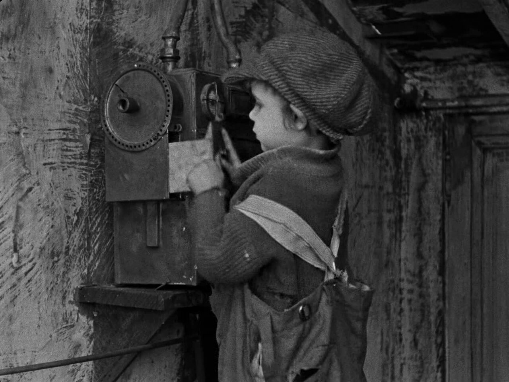
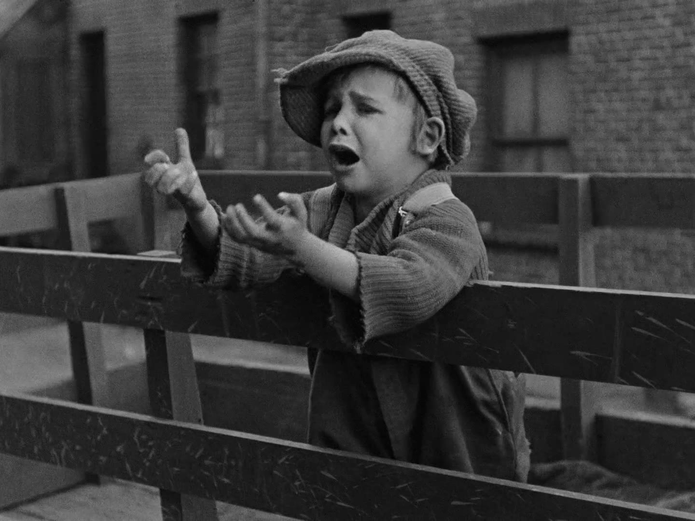

Ruang EditingStudi Kasus 9 & 12 · Produksi Film PendekXII PPLG 2 — Devin & Hosea

REC24.000 FPSSHUTTER 180°ISO 800
THE KID · 192150 mm · f/2.0MS
SCENE 01 / TAKE 02 · 1.33:1
TC 00:19:21:04
Satu adegan, dua keputusan: jarak kamera dan volume musik.
Dua studi kasus produksi film pendek. Menentukan ukuran gambar agar ekspresi pemain terbaca, dan menyeimbangkan musik latar agar dialog tetap terdengar.
12
Studi Kasus 12 · Sinematografi
Memperlihatkan ekspresi wajah pemain
Situasi. Dalam sebuah film pendek, seorang siswa menerima kabar bahwa ia berhasil mendapatkan beasiswa. Sutradara ingin memperlihatkan ekspresi bahagia dan air mata haru pada wajah siswa tersebut.
Coba keempat ukuran gambar di samping, lalu bandingkan luas area yang benar-benar terlihat di kotak kecil kanan bawah.

SIMCU85 mm · f/2.0 · eye level
Dagu sampai atas kepala. Senyum dan mata mulai menjadi pusat perhatian; latar berhenti mengganggu.
01Ukuran gambar apa yang paling tepat?
Close Up (CU) — dari bahu atau dagu hingga bagian atas kepala — lalu dilanjutkan Big Close Up (BCU) yang berfokus pada mata dan pipi saat air mata mulai terlihat. CU memindahkan perhatian dari ruangan ke wajah; BCU mempertajam momen air mata itu sendiri.
02Bagaimana posisi kamera?
Kamera sejajar dengan mata (eye level) dan berada dekat dengan subjek, dengan fokus dikunci pada mata agar perhatian penonton tertuju ke wajah pemain. Secara teknis: lensa 50–85 mm, bukaan lebar (f/1.8–2.8) untuk melembutkan latar, dan cahaya utama dari samping supaya air mata memantulkan cahaya.
03Mengapa gambar jarak jauh kurang tepat?
Long Shot atau Wide Shot membuat wajah pemain terlalu kecil: senyuman dan air mata sulit terlihat. Selain itu perhatian penonton teralihkan oleh latar belakang dan lingkungan, sehingga emosi pemain tidak tersampaikan dengan baik.
04Apa manfaat pengambilan gambar ini?
Menampilkan emosi dan detail ekspresi wajah dengan jelas.
Membangun kedekatan dan empati penonton terhadap tokoh.
Menekankan momen penting atau titik emosional dalam cerita.
Memusatkan perhatian penonton pada hal yang paling penting.
9
Studi Kasus 9 · Tata Suara
Musik latar menutupi dialog
Situasi. Dalam proses editing film pendek, editor menambahkan musik latar dengan volume tinggi. Akibatnya, suara percakapan antartokoh tidak terdengar jelas.
Nyalakan konsol, geser fader musik ke atas, lalu coba aktifkan ducking dan dengarkan bedanya.
00:00:00dialog tertutup musik
Vektor Skope 3D · Stereo & DialogAnalisis medan spasial frekuensi real-time
STANDBY
L (Musik)CENTER (Dialog)R (Musik)
Grafik 3D memetakan medan stereo: musik menyebar ke sumbu L/R, sementara dialog berpusat di sumbu tengah. Saat ducking aktif, energi musik mengerut agar dialog memotong jelas.
Simulasi. Dialog dibacakan oleh suara bawaan peramban (id-ID bila tersedia); musik adalah rekaman domain publik yang dipotong 30 detik. Angka pada fader adalah level relatif, bukan LUFS.
01Apa kesalahan yang dilakukan editor?
Musik latar diatur terlalu tinggi dan tidak diseimbangkan dengan volume dialog. Dialog adalah pembawa cerita; begitu musik menimpanya, penonton kehilangan informasi — bukan sekadar kenyamanan.
02Bagaimana mengatur keseimbangan suara?
Jadikan dialog prioritas: jaga levelnya stabil dan jelas.
Turunkan musik ±10–30% dari level dialog — dalam praktik mixing sekitar −12 s.d. −18 dB.
Gunakan fade in, fade out, dan keyframe volume supaya musik naik saat tidak ada dialog dan turun saat percakapan berlangsung (ducking).
Pisahkan track dialog, musik, dan efek suara pada timeline.
Periksa hasil audio dengan headphone dan speaker untuk memastikan suara terdengar seimbang.
Tambahan: sisakan ruang frekuensi 1–4 kHz untuk dialog (turunkkan sedikit di track musik) dan targetkan loudness akhir sekitar −14 LUFS untuk platform web.
03Apa fungsi audio mixing?
Audio mixing adalah proses menggabungkan dan menyeimbangkan seluruh elemen suara — dialog, musik, efek suara, dan ambience — menjadi satu audio yang utuh.
Mengatur level volume setiap elemen agar seimbang.
Menjaga kejelasan dialog agar mudah dipahami.
Menciptakan suasana dan kedalaman suara.
Menghasilkan kualitas audio akhir yang konsisten dan nyaman didengar.
04Mengapa musik latar tidak boleh mendominasi dialog?
Musik latar berfungsi sebagai pendukung untuk memperkuat emosi dan suasana. Jika volumenya terlalu tinggi, penonton sulit memahami percakapan, alur cerita menjadi kurang jelas, dan pesan film tidak tersampaikan. Suara yang terlalu keras juga membuat penonton terganggu atau lelah menonton.